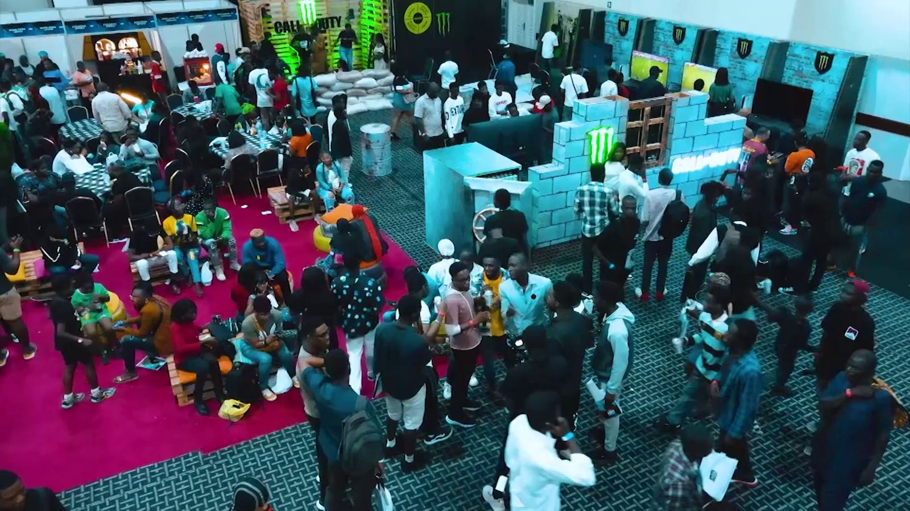

Festivals · Culture
Lagos Comic Con
- Dates
- Dates TBA
- Venue
- Landmark Event Centre, Oniru, Victoria Island (last official 2026 venue)
- Location
- Lagos, Nigeria
- Format
- In-person
- Category
- Culture
- Industry
- Comic and pop-culture convention
- Organiser
- Lagos Comic Convention
- Expected attendance
- 7,000
- Official website
- https://lagoscomiccon.net/
About
Official site still presents the 12 September 2026 edition at Landmark Event Centre, Oniru, Victoria Island — that edition is past as of 24 Nov 2026. No official 2027 dates. Recurring official pop-culture convention (comics, animation, games, film). Nigeria dates are local (West Africa Time, WAT, Africa/Lagos, UTC+1, no daylight saving).
Topics: comics, animation, games, cosplay, film.
Official homepage (fetched 24 Nov 2026) states '7,000+ Attendess'. Used as the organiser-stated scale; the published 12 September 2026 edition is past, and 2027 dates are not announced.
Sources
- Official — https://lagoscomiccon.net/